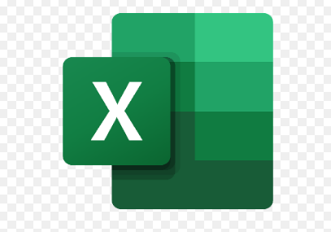
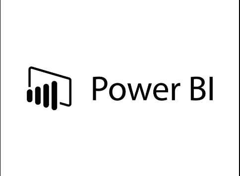

In this project we use the "Nashville Housing Data" dataset, containing information on home values within the Nashville housing market. Our objective is to explore various data cleaning techniques using Microsoft SQL Server.


This is a link to all the projects I've completed in SQL.

This is a link to all the projects I've completed in SAS.

This is a link to all the projects I've completed in Python.

This is a link to all the projects I've completed in R.

This is a link to all the projects I've completed in Excel.

This is a link to all the PowerBI dashboards and visualisations I've created.

This is a link to all the Tableau dashboards and visualisations I've created.